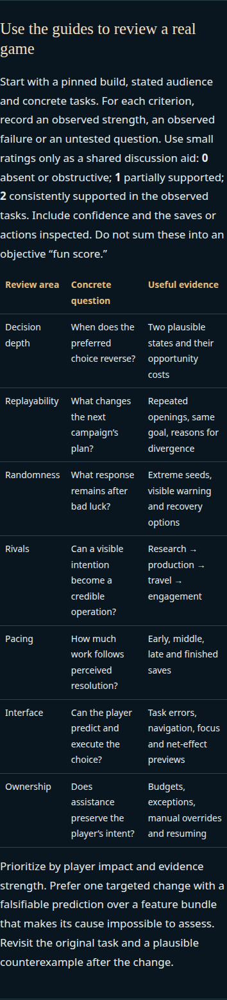

Independent review of the two design guides
Suitable to publish. No blocking factual, citation-fit, local-link or observed legibility defect found. Two small substantive clarifications would make the review criteria more complete; neither requires more research.
Independently read both complete English guides, all three core ledgers, replayability and experience notes, and the strategy ledger already read during the separately frozen game critique. Cross-check section citations against ledger claims and caveats. Parse every local link/fragment and count sources. Inspect both exact static guide files in Chromium at 1280 and 390, including keyboard focus and review anchors. No guide or game edits, no external source collection and no full accessibility certification.
This review tests synthesis fidelity against the supplied research, not independent truth verification of every original web source. Existing strategy critique and implementation artifacts were not changed.
Checks
36 core entries, 33 unique sources, 31 direct citations: all direct citations match the supplied ledgers. No broken local link or fragment, duplicate ID, page error or failed resource response. At1280 and 390 both pages and tables fit the viewport. Keyboard focus is visible and the top review shortcut works.
Two small substantive clarifications
R1 · Optional substantive completion
Good10/evidence and the shared review protocol; optionally bad8/opaque-ui · severity low · confidence high
The experience ledger explicitly calls for a newcomer to complete a viable basic loop before mastering every optimization (EXP04 and notes Criterion I). The guides say to observe first-time learning, but give no concrete learnability task. A review could cover expert consequence previews thoroughly while missing an opening that requires hidden mandatory knowledge.
Suggestion: Add one short test: observe an uncoached newcomer completing the basic loop, explaining one choice and naming one lesson for the next attempt. Record required assistance and hidden mandatory rules. This can fit in existing evidence prose or one review-table row; no new section is needed.
First-time learning, keyboard access and contextual information are already present. This is a missing operational check, not an assertion that onboarding was omitted entirely.
R2 · Optional diagnostic guardrail
Good4/replay and bad3/same-opening · severity low · confidence high
The ledgers explicitly note that recurring actions can remain meaningful when timing, targets or opportunity costs change. The guides emphasize first divergence and cosmetic variation, but do not state this counterexample directly. A literal reviewer might mistake a recurring research/build label for a solved opening despite different commitments behind it.
Suggestion: Add a sentence such as: A repeated action can still be meaningful when its timing, target or opportunity cost changes. This is already grounded in replayability notes criteria B/C and the shared situational-choice framework.
Existing wording already asks for causes and costs of insisting on a previous plan, so it does not actually assert that repeated buttons prove shallow play. The suggestion prevents that possible overreading.
Coverage and source fit
Mechanics, economy, depth and breadth: Good2 and bad2 correctly turn S01 Felder, S02 Orders, S03 Yields and S07 prerequisites into situational-choice criteria. Distinct currencies are not dismissed wholesale; more content is not equated with depth. Colony-slot examples are clearly illustrative design applications rather than attributed historical mechanics.
Randomness: Good3 and bad4 retain timing, distribution and impact as separate variables from RP01/RP02. Input randomness is not treated as automatically fair. Accumulation, extreme starts, substitutes and recovery are included. No unsupported universal claim that output randomness is inferior appears.
Replayability and asymmetry: Good4 and bad3 preserve RP03/RP06/RP08/RP12: early useful information, changed priorities, between-faction and within-faction diversity, and coherent long plans. The optimizer/roleplayer disagreement survives. See optional clarification R2.
Exploration, events and narrative: Good5 and bad5 preserve RP04/RP07/RP10/RP11: information and location can matter without jackpots, stateful events can connect choices, more text alone is not evidence, and narrative preference differs from optimization. Tidefall is presented as a historical design argument under the header's explicit limitation.
AI and diplomacy: Good6 and bad6 align closely with S04/S06/S09/S10: coherent research-production-travel plans, readable motives, exploit checks and avoidance of arbitrary procedural waiting. No current Galactic Civilizations behavior or universal hostility standard is asserted.
Pacing and endings: Good1/7 and bad7 preserve S05/S11/S12/RP05/EXP05: earned dominance versus sustained opposition, optional continuation, visible rival progress, perceived resolution versus formal victory, and the possibility that a crisis merely extends work. RP09's direct crisis source is present in the index but not directly linked in these sections; the cited late-game discussion also covers the tradeoff, so this is not a citation error.
UI, UX, atmosphere and agency: Good8/9 and bad8/9 faithfully use EXP01/03/06/08/09/10/11: local consequences, attribution, comparisons, forecasts, stable context, budgets, overrides, readable text and optional planning. Atmosphere is not conflated with usability. Onboarding is less operationally explicit; see R1.
Boring and repetitive play: Good7/9/10 and bad1/5/7/10 distinguish deliberation from execution and acknowledgement. Fine control can itself be valued. Automated wins, feature counts, event count and low click count are not treated as measurements of enjoyment.
Limits and disagreement
- The opening methodology accurately identifies designer arguments, self-selected player anecdotes, historical snapshots and the lack of readable supporting X content. The ledgers do not support claims of representative consensus or measured retention, and neither guide makes them.
- The single thesis is used to motivate separating action effort from mechanical progress and bounded testing; no PC-versus-console causal conclusion or late-game study result is invented. Its detailed sampling limits remain available in the linked ledger.
- Strong asymmetry, long plans, rare discoveries, micromanagement, automation, planning aids, understated versus expressive presentation, and growth versus anti-snowballing all retain relevant disagreements.
- The 0–2 ratings and repeated-play tests are explicitly proposed review tools rather than published benchmarks. Ratings are anchored to observed tasks, permit untested questions and are not summed into a fun score.
- Two core sources are not directly cited in either guide: S08 AI War positionality and RP09 launch-era Stellaris crises. They remain legitimate research inputs in the index; the guides do not falsely claim to cite every researched source.
Legibility
Observed body copy, headings and review tables are readable at both widths, with no clipping or horizontal page overflow. Source citations are deliberately smaller 12px text with clear link color; browser zoom remains available. Header and contents are substantial but the top review shortcut works. This bounded inspection does not replace assistive-technology testing or testing with readers who need larger text.

Structured review · Complete link/citation audit and guide hashes · Browser measurements · Browser audit source